INTELLIVIX MLOPS / USER GUIDE
처음부터 따라 하는
MLOps 사용자 가이드
로그인부터 데이터 생성·라벨링·학습·배포·관리까지
사용자용화면을 보고, 순서대로
클릭하며 시작하세요.
실제 서비스 화면과 버튼 이름을 기준으로 작성했습니다.
Detector와 VLM의 작업 절차를 각각 안내합니다.
| 차례 | 페이지 |
|---|
| 1. 로그인 / 권한 설정 | 2–3 |
| 2. 데이터셋 생성 | 4–5 |
| 3. 데이터셋 라벨링 | 6–9 |
| 4. 학습 및 배포 | 10–14 |
| 5. 데이터 관리 | 15–17 |
화면 확인 기준: 2026.09.17 · 웹 버전
화면의 파일명·수량·작업 이력은 캡처 시점의 예시입니다. 비밀번호는 포함하지 않았습니다.
실제 생성·저장·검수·학습·변환 실행은 수행하지 않았으며, 화면과 기능의 조작 흐름을 확인했습니다.
INTELLIVIX MLOPS / 01 로그인 / 권한 설정
계정으로 로그인하기
준비물: 관리자가 발급한 아이디와 초기 비밀번호
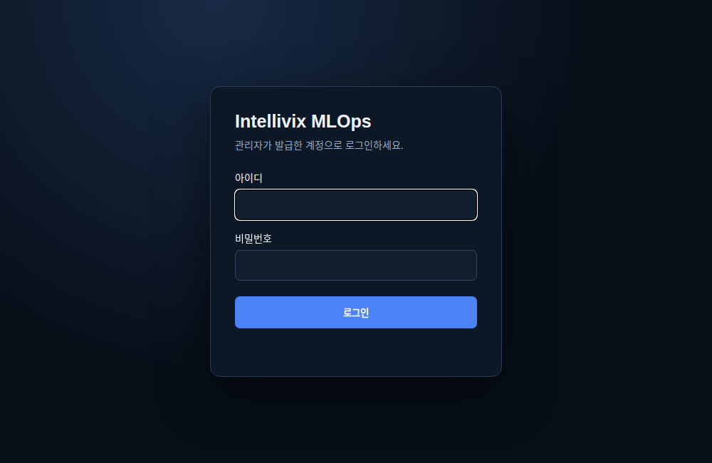
로그인 화면 — 아이디와 비밀번호를 입력합니다.- 접속 주소를 열고 아이디와 비밀번호를 입력한 다음 로그인을 누릅니다.
- 첫 로그인에 비밀번호 변경 화면이 나오면 현재 비밀번호, 새 비밀번호, 새 비밀번호 확인을 입력합니다. 화면 기준 새 비밀번호는 5자 이상입니다.
- 변경 후 시작을 누릅니다. 대시보드가 나타나면 로그인이 완료된 것입니다.
- 작업에 맞는 메뉴로 이동합니다. 메뉴 위치가 익숙하지 않다면 아래 주소로 바로 열 수 있습니다.
INTELLIVIX MLOPS / 01 로그인 / 권한 설정
사용자와 그룹에 권한 부여하기
관리자만 수행 · Settings → Admin → 계정 관리
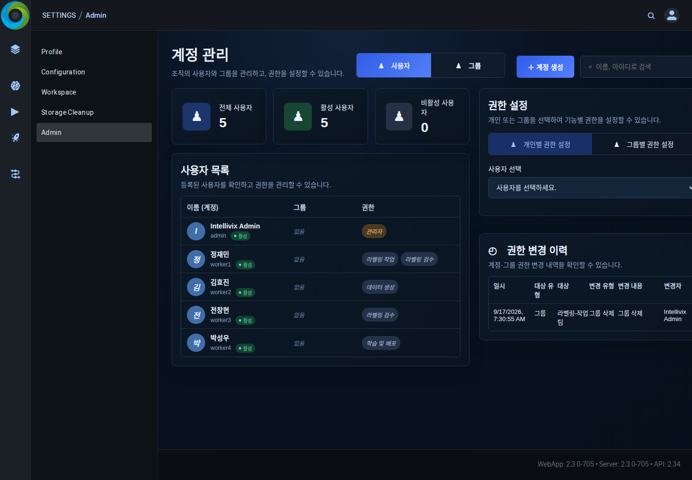
계정 관리 — 사용자·그룹과 오른쪽 권한 설정을 확인합니다.- 사용자 → ＋ 계정 생성을 누르고 이름, 로그인 계정, 초기 비밀번호를 입력합니다. 필요한 소속 그룹과 기능 권한을 선택한 뒤 저장합니다.
- 기존 사용자는 수정에서 변경하거나, 오른쪽 개인별 권한 설정에서 사용자를 선택해 권한을 체크하고 변경사항 저장을 누릅니다.
- 여러 명에게 같은 권한을 주려면 그룹 → ＋ 그룹 생성에서 그룹 이름, 권한, 소속 사용자를 선택하고 저장합니다. 그룹별 권한 설정에서 일괄 변경할 수도 있습니다.
| 권한 | 사용할 수 있는 주요 기능 |
|---|
| 데이터 생성 | 영상 생성, 작업 데이터 전달 등 |
| 라벨링 작업 | 라벨 작성·수정, 검수 요청 |
| 라벨링 검수 | 검수 대기 라벨 확인, 승인·반려 |
| 학습 및 배포 | 학습 실행·종료, 모델 변환·다운로드 |
INTELLIVIX MLOPS / 02 데이터셋 생성
이미지로 학습용 영상 만들기
Video Studio → 이미지 → 영상 · 데이터 생성 권한 필요
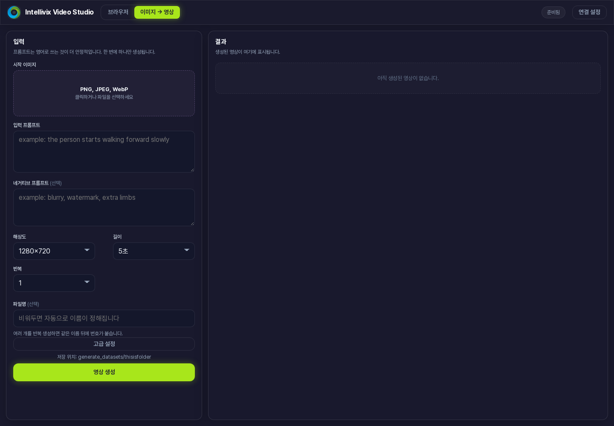
왼쪽에서 입력과 옵션을 설정하고 오른쪽에서 결과를 확인합니다.- 연결 설정에서 저장할 폴더를 확인합니다. 필요하면 폴더명을 입력해 만들기를 누른 뒤 이 폴더를 저장 위치로 사용 → 설정 저장을 선택합니다. 생성 서버 주소는 관리자가 안내한 값을 유지합니다.
- 이미지 → 영상 탭에서 시작 이미지를 눌러 PNG, JPEG 또는 WebP 파일을 선택합니다.
- 입력 프롬프트에 원하는 움직임을 구체적으로 씁니다. 예: A person slowly walks from left to right. 화면 안내에 따라 영어로 작성하면 좋습니다.
- 해상도, 길이, 반복을 선택합니다. 처음에는 반복 1회로 결과를 확인하세요. 파일명을 입력하면 결과를 찾기 쉽습니다.
- 필요한 경우 네거티브 프롬프트에 피하고 싶은 결과를 적거나 고급 설정의 시드를 조정합니다. 영상 생성을 누르고 결과가 표시될 때까지 기다립니다.
INTELLIVIX MLOPS / 02 데이터셋 생성
영상을 라벨링용 데이터로 보내기
Video Studio → 브라우저 → 영상 선택 → 작업으로 보내기(+비식별화)
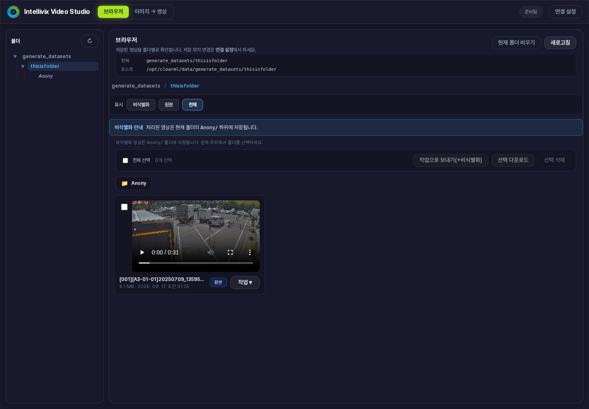
브라우저 — 폴더를 선택하고 사용할 영상에 체크합니다.- 왼쪽 폴더를 열고 필요한 영상을 체크합니다. 작업으로 보내기(+비식별화)를 누릅니다. 기존 영상이 이미 준비되어 있다면 영상 생성 과정은 생략할 수 있습니다.
- 전달 창에서 동작은 작업으로 보내기를 선택하고 저장 폴더명을 입력합니다. 예: walking_001.
- 대상에서 Detector 또는 VLM을 선택합니다. Detector는 이미지로 추출하고, VLM은 이미지 또는 영상을 선택합니다.
- 이미지로 보낼 때 추출 간격 (N 프레임)을 입력합니다. 30fps 영상에서 N=30이면 약 1초마다 1장을 추출합니다. N이 작을수록 더 많은 이미지가 만들어집니다.
- 필요한 경우 비식별화 적용 (안면·번호판 블러)를 켜고 대상을 선택합니다. 표시된 저장 위치를 확인한 뒤 시작을 누르고 처리가 끝날 때까지 기다립니다.
- Data Studio → 홈 → 새로고침에서 해당 폴더를 찾습니다. Detector 또는 VLM을 맞게 선택해 파일을 열 수 있는지 확인합니다.
INTELLIVIX MLOPS / 03 데이터셋 라벨링
작업 폴더와 역할 선택하기
Data Studio → 홈 → 라벨링 현황
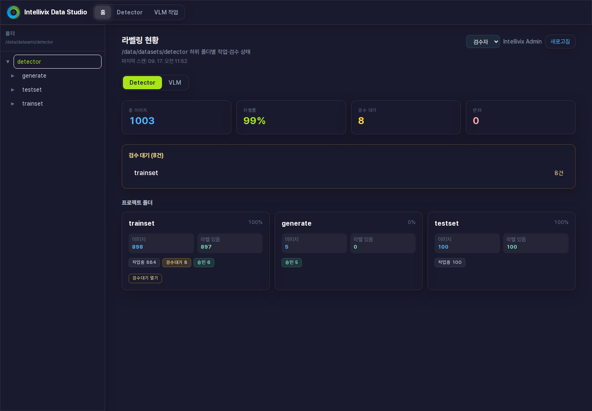
홈 — 폴더별 라벨 현황, 검수 대기, 반려 수를 확인합니다.- 홈에서 Detector 또는 VLM을 선택합니다. 왼쪽 폴더 트리에서 작업할 위치를 선택합니다.
- 작업 역할 선택이 보이면 라벨을 작성할 때는 작업자, 결과를 검사할 때는 검수자를 선택합니다. 한 역할만 부여된 계정에는 선택 목록이 표시되지 않을 수 있습니다.
- 프로젝트 폴더 카드를 눌러 작업 화면을 엽니다. 검수·수정할 대상은 검수대기 열기 또는 반려 열기로 찾습니다. 열린 뒤 상단 상태 필터도 확인합니다.
- 작업 화면에서 직접 열려면 폴더 열기를 누릅니다. 서버 폴더를 더블클릭하여 안으로 이동하고 이 폴더 열기를 누릅니다.
- 표시되는 파일명과 폴더가 자신이 맡은 데이터인지 확인한 뒤 작업합니다. 현황이 오래되어 보이면 홈에서 새로고침을 누릅니다.
INTELLIVIX MLOPS / 03 데이터셋 라벨링
Detector: 객체에 박스 그리기
Data Studio → Detector · 작업자 역할
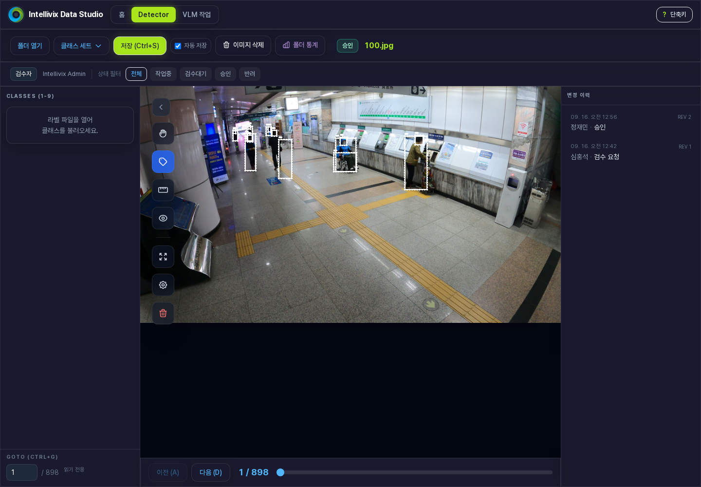
Detector 작업 화면 — 왼쪽 클래스, 중앙 이미지, 아래 탐색·이력을 사용합니다.- 폴더 열기로 이미지가 있는 폴더를 엽니다. 클래스 세트 → 파일에서 불러와 저장 (Ctrl+L)에서 관리자가 정한 클래스 목록 파일을 선택합니다.
- 왼쪽에서 그릴 대상의 클래스(예: person)를 선택합니다. 숫자 1–9로도 클래스를 고를 수 있습니다. 목록 순서를 임의로 바꾸지 마세요.
- 박스 생성 모드에서 객체의 한쪽 모서리를 클릭하고, 대각선 반대 모서리를 클릭합니다. 대각선 방향의 두 번 클릭으로 박스를 만듭니다.
- 박스를 클릭해 선택한 뒤 이동하거나 모서리 핸들로 크기를 맞춥니다. 잘못된 박스는 선택 후 Backspace로 삭제하고, 잘못된 클래스는 E로 변경합니다.
- 이미지의 필요한 객체를 모두 표시하고 저장 (Ctrl+S)을 누릅니다. 상단 저장 상태를 확인한 뒤 다음 이미지로 이동합니다.
INTELLIVIX MLOPS / 03 데이터셋 라벨링
VLM: 질문과 정답 작성하기
Data Studio → VLM 작업 · 이미지와 영상 모두 지원
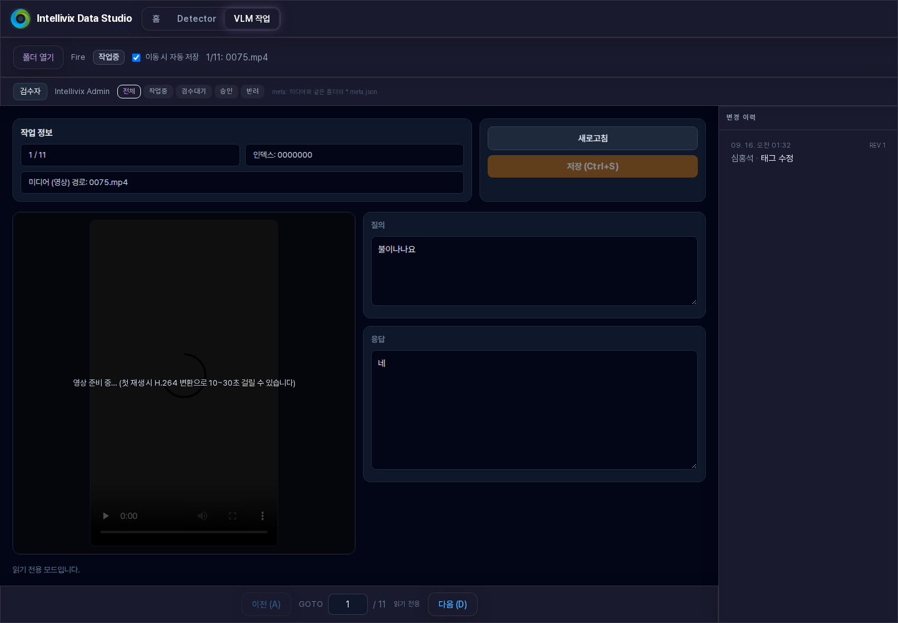
VLM 작업 화면 — 미디어를 확인하고 질의·응답을 작성합니다.- 홈에서 작업자 역할을 선택하고 VLM 작업 → 폴더 열기로 이미지 또는 영상이 있는 폴더를 엽니다.
- 미디어를 확인합니다. 영상은 재생하여 전체 상황을 살펴봅니다. 첫 재생 준비에 시간이 걸리면 완료될 때까지 기다립니다.
- 질의에 모델이 답해야 할 질문을 적습니다. 예: “영상에서 사람이 어떤 행동을 하고 있나요?”
- 응답에 실제 보이는 내용만 정확하게 적습니다. 예: “한 사람이 화면 왼쪽에서 오른쪽으로 걸어갑니다.” 확인되지 않은 행동이나 의도를 추측해 넣지 않습니다.
- 저장 (Ctrl+S)을 누르고 저장 완료를 확인합니다. 다음 항목으로 갈 때 자동으로 저장하려면 이동 시 자동 저장을 켭니다.
- 다음 항목으로 이동하며 반복합니다. 라벨이 완성된 항목은 검수 요청을 눌러 제출합니다.
INTELLIVIX MLOPS / 03 데이터셋 라벨링
검수 요청 → 승인 또는 반려
저장만으로 검수 완료가 되지는 않습니다.
작업중→ 검수 요청 →검수대기→승인
- 작업자: 라벨 내용과 저장 상태를 확인한 뒤 검수 요청을 누릅니다. 상태가 검수대기로 바뀌는지 확인합니다.
- 검수자: 홈에서 검수자 역할을 선택하고 검수 대기 폴더를 엽니다. 작업 화면의 검수대기 필터로 대상을 확인합니다.
- 박스의 클래스·위치·누락 여부 또는 VLM의 질문·정답을 확인합니다. 정확하면 승인, 수정이 필요하면 반려를 누릅니다. 반려 사유는 수정할 위치를 알 수 있도록 구체적으로 적습니다.
- 작업자: 반려 상태의 항목과 변경 이력을 확인하고 수정합니다. 저장 후 재검수를 누릅니다.
- 완료 후 홈의 현황을 새로고침하여 검수 대기와 반려가 남았는지 확인합니다.
자주 쓰는 조작
| 조작 | 방법 |
|---|
| 저장 / 폴더 열기 | Ctrl+S / Ctrl+O |
| 이전 / 다음 항목 | A / D (입력칸 밖에서 사용) |
| Detector 확대 / 화면 이동 | 마우스 휠 / 스페이스를 누른 채 드래그 |
| Detector 실행 취소 / 다시 실행 | Ctrl+Z / Ctrl+Y |
| 전체 단축키 보기 | Detector 상단 단축키 버튼 |
INTELLIVIX MLOPS / 04 학습 및 배포
Detector: 학습 데이터 준비하기
모델 학습 및 배포 → 학습 → Detector
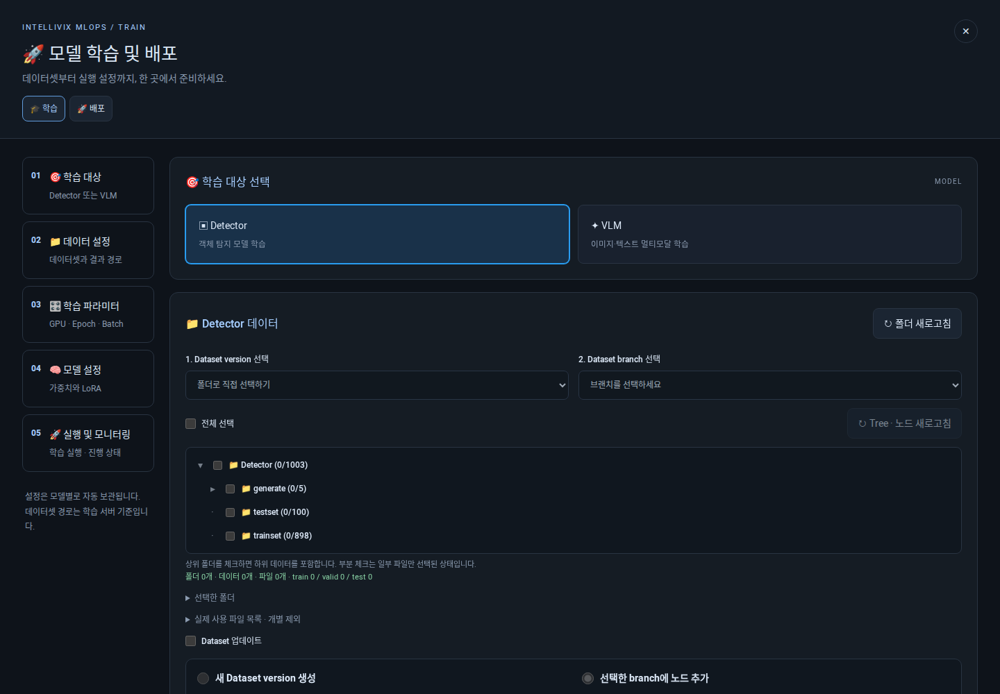
데이터 폴더와 클래스를 선택한 뒤 학습용 파일을 생성합니다.- 기존 데이터를 재사용하려면 Dataset version과 Dataset branch를 선택합니다. 처음에는 폴더로 직접 선택하기를 사용합니다.
- 폴더 트리에서 학습할 폴더를 체크합니다. 상위 폴더를 선택하면 하위 데이터도 포함됩니다. 실제 사용 파일 목록 · 개별 제외에서 제외할 파일을 해제합니다.
- 검출기 학습 클래스를 확인합니다. 입력 순서가 라벨 작성에 사용한 클래스 ID 0, 1, 2…와 일치해야 합니다.
- 클래스 적용 · data.yaml 저장 또는 annotation 자동 생성을 누릅니다. 완료 메시지, 학습·검증 수량과 데이터 YAML 경로가 반영됐는지 확인합니다.
- 폴더·파일·클래스를 바꿨다면 생성 버튼을 다시 눌러 적용합니다. 준비 완료 후 다음 페이지의 학습 설정으로 이동합니다.
INTELLIVIX MLOPS / 04 학습 및 배포
Detector: 학습 시작과 진행 확인
데이터 준비 완료 → 학습 설정 → 학습 시작
| 입력 항목 | 사용자가 정할 내용 |
|---|
| GPU 번호 | 관리자가 배정한 번호. 예: 0 또는 0,1 |
| Epoch | 전체 데이터를 반복 학습할 횟수 |
| Batch size | 한 번에 처리할 이미지 수 |
| 입력 이미지 크기 | 학습에 사용할 이미지 크기 |
| 모델 크기 | Small / Medium / Large 중 프로젝트에 맞게 선택 |
| 학습 실행 이름 | 예: detector_v1. 영문·숫자·밑줄·하이픈 사용 |
- 위 항목을 확인합니다. 값을 모르면 담당자와 정한 기준을 사용하고, 화면의 빈 입력은 서버 기본값을 사용합니다. 기존 학습 재개는 이어서 학습할 작업이 있을 때만 선택합니다.
- 데이터 선택을 버전으로 남기려면 Dataset 업데이트를 체크합니다. 최초 등록은 새 Dataset version 생성, 기존 데이터에서 변경한 경우 선택한 branch에 노드 추가를 선택해 이름을 입력합니다.
- 하단 안내에 준비가 완료되었는지 확인하고 학습 시작을 누릅니다. 상태와 로그가 나타나면 작업이 접수된 것입니다.
- 진행 중에는 상태·로그를 확인하고, GPU/CPU 사용량 확인하기에서 서버 사용량을 봅니다. 자원 사용량만으로 성공 여부를 판단하지 말고 최종 완료 상태를 확인합니다.
- 중단해야 할 때는 학습 종료를 누릅니다. 실패하거나 연결이 끊겼다면 로그와 실제 실행 상태를 확인한 뒤 다시 실행합니다.
INTELLIVIX MLOPS / 04 학습 및 배포
VLM: 데이터 준비와 학습 실행
모델 학습 및 배포 → 학습 → VLM
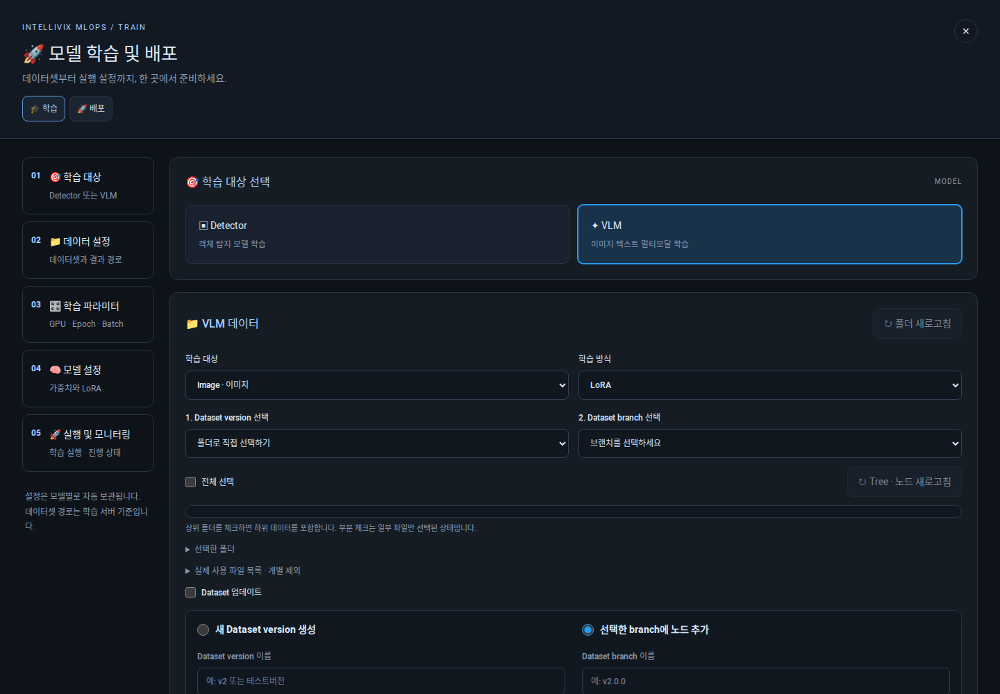
학습 대상과 방식을 고른 뒤 학습용 JSON을 생성합니다.- 학습 대상은 Image(이미지), Video(영상), Both(둘 다) 중 하나를 고릅니다. 학습 방식은 프로젝트 기준에 따라 LoRA 또는 Full을 선택합니다.
- Dataset version·branch 또는 폴더 트리에서 사용할 데이터를 선택합니다. 선택한 미디어에 질문·응답 라벨이 준비되어 있는지 확인합니다.
- train.json · valid.json 생성을 누릅니다. 완료 메시지와 파일 경로를 확인합니다. 선택 폴더나 학습 대상을 변경하면 다시 생성합니다.
- 사용할 GPU, 학습 횟수 · Epoch, 그래디언트 누적 횟수, 학습률, 학습 작업 이름을 확인합니다. 잘 모르는 고급 설정은 담당자가 지정한 값이나 서버 설정을 사용합니다.
- 영상 학습이면 영상 샘플링 FPS와 영상 최대 픽셀 수도 확인합니다. 필요하면 Dataset 업데이트를 지정한 뒤 학습 시작을 누릅니다.
- 상태·로그를 확인하고 학습 완료 후 배포 탭으로 이동합니다.
INTELLIVIX MLOPS / 04 학습 및 배포
Detector: 배포용 모델 내려받기
모델 학습 및 배포 → 배포 → Detector
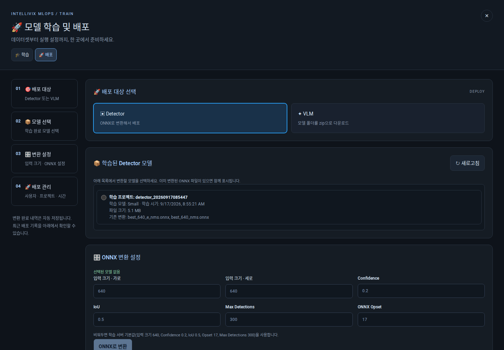
완료된 모델을 선택하고 ONNX 변환 옵션을 확인합니다.- 학습된 Detector 모델 → 새로고침을 누릅니다. 학습 프로젝트, 모델 크기, 학습 시기를 확인하고 변환할 모델을 선택합니다.
- 입력 크기 · 가로 / 세로를 실제 사용할 환경에 맞춥니다. Confidence는 탐지 점수 기준, IoU는 겹친 탐지를 정리하는 기준입니다.
- Max Detections와 ONNX Opset을 포함한 변환 설정을 확인합니다. 비우면 화면에 안내된 서버 기본값을 사용합니다.
- ONNX로 변환을 누르고 상태·로그에서 완료를 확인합니다. 이후 표시되는 원본 ONNX 다운로드 또는 최종 ONNX (NMS 포함) 다운로드를 선택합니다.
- 다운로드한 파일명과 사용 모델을 기록합니다. 어느 파일을 사용할지는 실제 적용할 프로그램의 요구사항에 맞춥니다. 하단 배포 관리에서 사용자·프로젝트·시간을 확인합니다.
INTELLIVIX MLOPS / 04 학습 및 배포
VLM: 모델 패키지 다운로드하기
모델 학습 및 배포 → 배포 → VLM
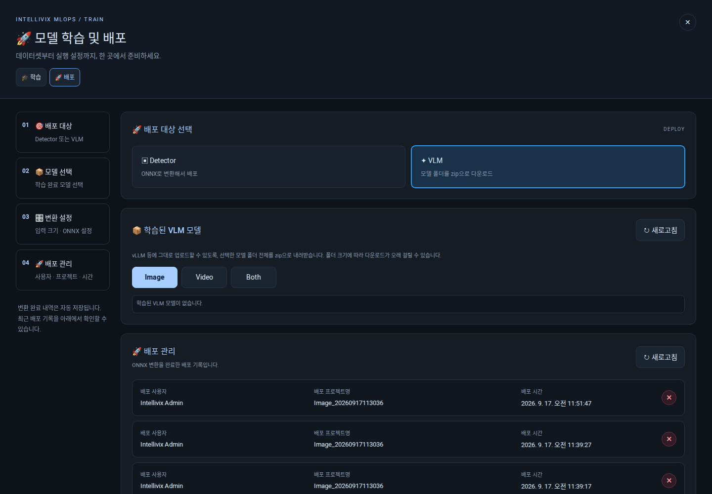
대상 유형을 고르고 모델 목록을 확인합니다. 캡처 시 선택 탭의 목록은 비어 있습니다.- Image / Video / Both 중 학습한 유형에 맞는 탭을 선택합니다.
- 새로고침을 누르고 프로젝트·모델 폴더를 확인합니다. 모델이 없다면 학습 완료 여부와 선택한 유형을 먼저 확인합니다.
- 해당 모델의 zip 다운로드를 누릅니다. 모델 폴더 전체를 묶으므로 크기에 따라 시간이 걸릴 수 있습니다.
- 브라우저의 다운로드 목록에서 완료 여부를 확인하고 프로젝트명·학습 유형과 함께 보관합니다. 받은 모델 폴더는 실제 적용 환경의 담당자에게 전달합니다.
학습·배포가 막힐 때
| 상황 | 확인할 사항 |
|---|
| 학습 시작이 비활성화됨 | 학습용 파일 생성 완료 여부와 학습 및 배포 권한 확인 |
| 설정을 바꾸고 시작할 수 없음 | Detector는 data.yaml, VLM은 train.json·valid.json 다시 생성 |
| 완료 모델이 보이지 않음 | 학습 완료 여부 → 모델 유형 → 새로고침 순서로 확인 |
| 변환 실패 / 다운로드 실패 | 오류 메시지와 작업명을 기록해 담당자에게 전달 |
INTELLIVIX MLOPS / 05 데이터 관리
데이터 현황과 파일 정리하기
라벨 상태는 Data Studio, 생성 영상은 Video Studio에서 관리합니다.
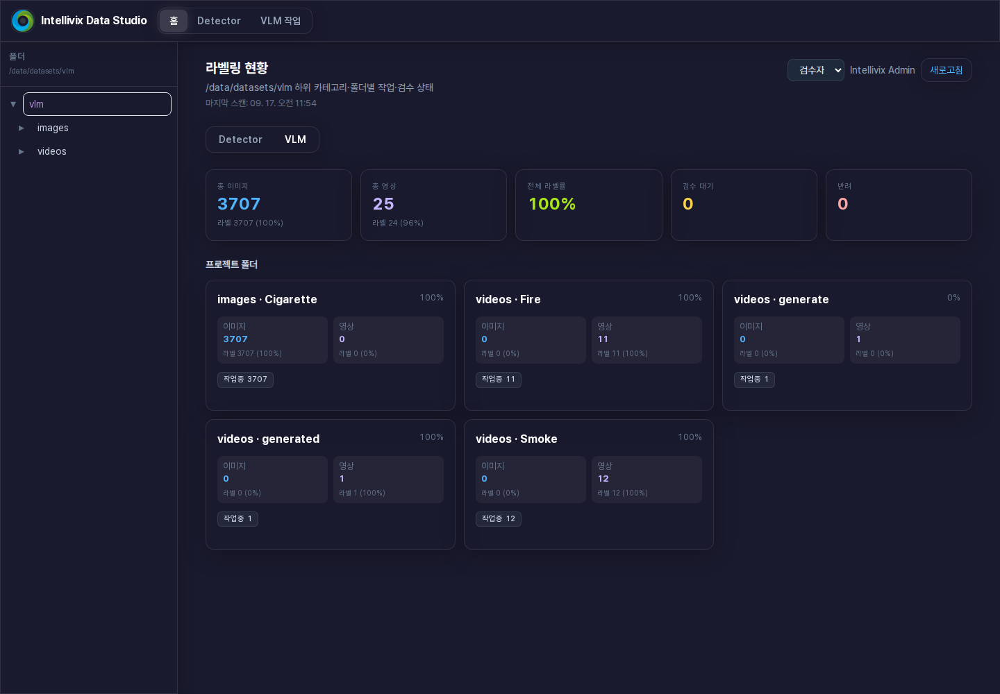
VLM 현황 — 이미지와 영상의 라벨 수를 나누어 확인합니다.- Data Studio → 홈에서 Detector 또는 VLM을 선택하고 새로고침합니다. 폴더별 파일 수·라벨 수·검수 대기·반려를 확인합니다.
- 완료되지 않은 폴더를 열고 작업중 / 검수대기 / 반려 필터를 사용합니다. 반려 항목은 수정 후 재검수하고, 변경 이력에서 처리 내용을 확인합니다.
- Detector에서 클래스별 수량을 살펴보려면 폴더를 연 뒤 폴더 통계를 사용합니다. 예상과 다른 수량이나 누락이 있는지 확인합니다.
- Video Studio → 브라우저에서 폴더와 비식별화 / 원본 / 전체 표시를 선택합니다. 필요한 영상은 체크 후 선택 다운로드로 보관합니다.
- 불필요한 영상만 체크해 선택 삭제합니다. 현재 폴더 비우기는 더 넓은 범위의 정리이므로 현재 폴더와 확인창의 대상을 반드시 확인합니다.
INTELLIVIX MLOPS / 05 데이터 관리
Dataset 버전과 변경 이력 보기
DATASETS → Dataset → Detector 또는 VLM → 버전 선택
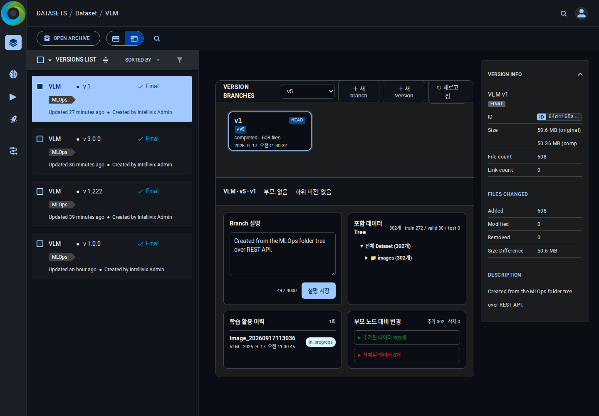
VERSION BRANCHES — 노드를 선택해 데이터 구성과 이전 버전 대비 변경을 확인합니다.- DATASETS에서 Dataset 프로젝트를 열고 Detector 또는 VLM을 선택합니다. 버전 목록에서 확인할 항목을 누릅니다.
- VERSION BRANCHES의 선택 목록에서 볼 그룹을 고르거나 전체 브랜치를 선택합니다. 그래프의 노드를 눌러 상세 내용을 확인합니다.
- 포함 데이터 Tree에서 파일과 학습·검증 수량을 확인합니다. 부모 노드 대비 변경에서 추가·삭제된 데이터를 확인합니다.
- Branch 설명에 목적과 변경 이유를 적고 설명 저장을 누릅니다. 예: “야간 영상 30개 추가, 잘못된 라벨 2개 수정”.
- 학습 활용 이력에서 해당 데이터를 사용한 작업을 찾습니다. 최신 성공 여부는 학습 화면의 상태·로그와 함께 확인합니다.
INTELLIVIX MLOPS / 05 데이터 관리
새 버전 만들기와 작업 마무리
현재 데이터 구성을 기록해 다음 학습에서 다시 사용할 수 있게 합니다.
기존 버전에서 데이터를 변경해 기록하기
- 버전 상세 화면에서 ＋ 새 branch를 누릅니다. 기준이 될 부모 노드를 선택합니다.
- 사용할 데이터를 선택하고 Branch 이름을 입력합니다. 이 창의 형식 안내에 맞춰 v1.2.0처럼 입력합니다. 변경 이유를 설명에 적고 ＋ 저장을 누릅니다.
- 저장 후 그래프에 새 노드가 나타나는지, 부모와 포함 데이터가 맞는지 확인합니다.
새로운 데이터 구성을 별도로 시작하기
- 버전 상세 화면에서 ＋ 새 Version을 누릅니다. Base Dataset 폴더와 사용할 데이터를 선택합니다.
- Dataset version 이름(예: v2), Dataset Branch 이름(예: 2.0.0), 설명을 입력하고 Version 생성을 누릅니다. 이 작업은 버전 등록이며 학습 시작은 별도입니다.
- 등록된 항목은 학습 화면의 Dataset version / Dataset branch에서 선택해 사용합니다. 처음부터 등록된 버전이 없는 경우에는 학습 화면의 Dataset 업데이트 → 새 Dataset version 생성 흐름을 사용합니다.
작업 종료 전 체크
| 확인 항목 | 완료 기준 |
|---|
| 라벨링 | 저장 완료 · 필요한 검수 요청 완료 · 반려 처리 확인 |
| 학습 | 최종 상태 확인 · 사용 데이터 버전과 학습명 기록 |
| 배포 | 올바른 모델 파일 다운로드 완료 · 적용 담당자 확인 |
| 데이터 관리 | 버전 설명 저장 · 원본 보관 · 삭제 대상 재확인 |
로그인 오류는 계정 상태·비밀번호·접속 주소를, 읽기 전용은 역할·권한·검수 상태를 확인하세요. 오류가 계속되면 화면 메시지와 폴더명·작업명을 관리자에게 전달합니다.